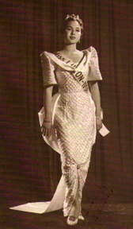
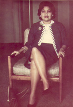

en | eo | ia | Ultime modification in 2023-07-29
Un Historia
de Victor Emmanuel Medrano
Le nomine de familia Medrano veni del pais basque, que hodie imbrica Espania e Francia. Le signification del nomine es non clar e es misteriose. Un fonte assere que illo significa un loco de filices ("edi" = filice, "ano" = abundancia). Un altere fonte assere que illo significa un campo stricte. Quecunque es le signification; il es generalmente consentite que illo es un nomine basque. Incidentalmente, il ha un ancian legendari Circo Medrano in Europa.
Il es incogite esque le nomine Medrano inter mi ancestres philippino esseva hereditate de colonistas espaniol o esseva un effecto de adoption nomine del edicto de Clavería in Philippinas. Le majoritate del indigenos philippino adoptava nomines espaniol a causa del decreto de Governator-General Narciso Clavería in 1849. "Le Catalogo Alphabetic de Nomines de Familias" esseva create pro distribuer systematicamente le nomines. Isto esseva facite pro sustener registros taxa plus facilemente proque philippinos initialmente non habeva nomines de familia e le majoritate del prime conversos al Catholicismo Roman adoptava nomines del sanctes e, in consequentia, il habeva un multiciplitate de identic nomines de familias.
Iste historia es de un linea de Medrano ab Philippinas. Mi generation e fratres es un culmination de sex populos: espaniol, grec, chinese, portugese, indigeno-philippino, e forsan judeo sanguines, totes in nulle ordine particular. Nos es eurasiaticos, un mixtion de hereditates europee e asiatic. Interessantemente, le espaniol nomine de familia Medrano ya se trova in listas de sephardic nomines de familia de judeos.
Como un recompensa a causa de su grande servicio sub le Imperio e Corona Espaniol, mi granpatre tertie, le espaniol Capitano Ramon Palacios, acceptava un proprietate in le colonia distante de Philippinas. Ramon, un aristocrato, partiva ab Espania a su nove casa aliquando in le 19e seculo. Ille habitava in le region de Batangas e se maritava con un indigena, philippina, Maria Aguirre. Illes habeva un filia nominate Concepcion 'Concha' Aguirre Palacios. Concha esseva de parve statura e esseva un sinioretta clemente. Illa se maritava con Andres Talambiras, un ric negociante de textile e un venditor in grosso de vestimentos de homines. Ille veniva ab Athena, Grecia. Andres esseva ab un familia de cinque infantes. Su parentes, Dimitri Talambiras e Keratsu Stamelos, habitava in Grecia. On dice que le citate domestic esseva Kimi sur le insula de Euboeia (nunc Evia) in Grecia.
Photo (in basso) de Dimitri Talambiras, mi granpatre tertie:
Photo (in basso) de Andres Talambiras, mi granpatre secunde:
Photo (in basso) de mi granmatre secunde, Concepcion 'Concha' Aguirre Palacios, con su duo infantes, Josefa 'Bebe' Palacios Talambiras e Ramon Palacios Talambiras:
Ante le nascentia de su filia Josefa Palacios Talambiras, Andres partiva a Nove York, Statos Unite, e nunquam retornava. Su sposa, Concha, restava in Philippinas. Su tyrannic plus ancian fratre, Juan Aguirre Palacios, la dissuadeva de partir. Le billetes que Andres inviava pro Concha e lor duo infantes, Josefa e Ramon, esseva interceptate de Juan e nunquam esseva date a illes. Le majoritate del correspondentia que Andres inviava a Concha la attingeva nunquam.
Andres se resposava in le Statos Unite, iste tempore con un judea. Il es non certe qual religion Andres adhereva; on dice que ille esseva un grec orthodoxo, ma poterea haber essite un grec judeo. Esque ille esseva un grec judeo? Plus resercar es necessari in re illo. Su religion es ancora incogite.
Intertanto in Philippinas, Josefa cresceva sub le parapluvia protective de su ric matre e deveniva accostumate al vita tranquille. Josefa studiava belle artes in Holy Ghost College, un institution catholic.
Photo (in basso) de Josefa Palacios Talambiras ("Lola Bebe"), mi granmatre maternal:
Photo (in basso) de un littera a Josefa ab su patre Andres in le 21e de augusto de 1939:
Josefa se maritava con un homine intelligente e industriose, Macario Aguilera Medrano. Ille esseva un medico general e in su tempore esseva un del candidatos plus succedite del examinationes medical. Durante le Secunde Guerra Mundial, ille serviva como un officiero medical pro le armea philippino. Durante annos plus tarde, ille practicava le acupuncturo e le medicina oriental.
Pedro Medrano, le patre de Macario, esseva un proprietario de terreno, un domator de cavallos, e un consiliero al village. Florencia Aguilera, le matre de Macario, esseva un femina ric e tranquille. Macario, qui non etiam sapeva le nomines e le origines de su proprie granparentes, verisimile habeva ancestres chinese, de plus philippino, evidentemente de su aspecto physic.
Photo (in basso) de Macario Aguilera Medrano ("Lolo Mac"), mi granpatre maternal:
Josefa e Macario faceva crescer quatro infantes: Belinda, Bella, Edgardo, e Alberto. Belinda esseva "Miss Luzon" de 1958 e esseva un candidata pro "Miss Philippines" in ille anno. Illa studiava administration commercial in le Universitate de Philippinas. Illa deveniva le prime femina como un administratrice de banco de un del plus grande bancos in Asia Sudoriental, le Far East Bank. Post le immigration a Canada in 1976, illa laborava pro Royal Bank usque 1997, quando illa finalmente se pensionava.
Photo (in basso) de mi matre, Belinda Talambiras Medrano, "Miss Luzon" (1958):

In 1898, Espania perdeva contra le Statos Unite in un guerra. Philippinas deveniva sub le administration statounitese. Rebelliones sequeva. Durante le Guerra Philippino-Statounitese, Capitano Mariano Medrano battaliava sub General Malvar. Malvar esseva le ultime general qui capitulava al americanos. Ben que le general cedeva su armas, le brave Mariano continuava defiar le americanos, ma misteriosemente ille dispareva. Su filio, Victorino Medrano, provava trovar le durante alicun annos. Sin succeso in su cerca, ille decideva devenir tranquille e maritar se.
In le 2e de april de 1913, le sposos juvene, Victorino Medrano e Margarita Achico Aguirre, esseva benedicte con lor prime infante, filio, nominate Francisco Aguirre Medrano. Victorino esseva iste tempore un homine occupate, laborante como un ingeniero civil pro le governamento del provincia Batangas in Philippinas. Margarita esseva solmente 15 annos de etate. Le infante, Francisco, in le majoritate del tempore esseva custodiate de su granparentes paternal, Fernanda Venturina Achico e Alejandro Aguirre. Lim Dy Co, le matre de Alejandro, esseva del sanguine chinese. Le patre de Fernanda habeva un nomine de familia Achico, que verisimile esseva del origine chinese. Iste nomine de familia esseva originalmente "Chico", ma plus tarde prefixate de "A" proque "chico" esseva coincidentalment un specie de fructo in le lingua philippino.
Francisco cresceva e deveniva un puero multo active e industriose. In le schola, ille succedeva academicamente e athleticamente. Ille teneva car al proverbo classic, un mente san in un corpore san. Extra essere un grande orator, debattor, e jornalista, ille esseva anque un experto de judo, spada, fusil, pistola, boxa, natada, e tennis, e esseva etiam un superbe pictor e dansator. Ille esseva anque un maestro del arnis de mano (brokil), un arte martial philippino. Ille se graduava como un del studentes plus succedite ab le Collegio de San Beda de Manila.
Photo (in basso) de Francisco Aguirre Medrano ("Daddy Pito"), mi granpatre paternal:
Francisco studiava le Lege in le Universitate de Philippinas in Manila. Ibi ille se inamorava de Lydia Ramos Rillo, qui studiava essere un maestra. In le 24e de septembre de 1934, le amantes fugiva e se maritava in le Justitia e Pace de Manila. Le affaire esseva sin le consento del parentes de Lydia, Salvador Benigno Apacible Rillo e Nazaria Cudiamat Ramos. Parentheticamente, Tiangco e Inciong esseva nomines de familias chinese que appare in le lineas de Lydia. Un de su ancestres del 18e seculo, Pedro Bohai, esseva de Portugal.
Photo (in basso) de mi granparentes secunde, Nazaria Ramos e Salvador Rillo (1924):
Salvador esseva un collector del Officio de Taxation Internal Governamental e un pesante investitor de valores mina. Ille esseva ben educate e parlava espaniol, anglese, e tagalog con fluencia equal. Le matre de Lydia, Nazaria, esseva un femina industriose e resolute. Illa esseva famose pro esser avide jocatrice de cartas. Le patre de Salvador, Santiago Rillo, esseva un soldato. Durante le tarde 19e seculo, como un membro del revolutionarios del Kataastaasang Kagalanggalangang Katipunan (KKK), ille battaliava contra corrupte governatores espaniol. Cavalleria flueva in le familia. Anque Santiago esseva un del signatores del Constitution de Malolos, declarate in le 21e de januario de 1899. Ille constitution fundava le republica independente de breve duration sub Presidente Emilio Aguinaldo inter administratores espaniol e le nove invasores statounitese.
Photo (in basso) de Lydia Ramos Rillo ("Mommy Lydia"), mi granmatre paternal (1964):

Post le matrimonio, Lydia se graduava e a causa de su competentia extraordinari del anglese, illa tosto deveniva un administratrice fer del Departimento de Anglese del multo respectate Lyceo de Batangas. Intertanto, le sposo Francisco laborava como un servitor public in Manila. Ille se graduava e attingeva le Diploma de Lege in 1941. Infortunatemente, ille non poteva prender su examinationes official a causa del aurora del Secunde Guerra Mundial in ille anno.
Le soldatos japonese disordinava e occupava le insulas. Le soldatos statounitese e philippino perdeva in Bataan. Francisco abortava totalmente su planos. Pro protectar su familia, ille les transfereva al junglas isolate. Patriotismo infundeva energia a Francisco. Galantemente, ille formava un secrete movimento de guerrilleros con ille mesmo como un colonello. Le japoneses le declarava un recercate rebello.
Coincidentalmente, anque le patre affin de Francisco, Salvador, participava in un altere movimento de resistentia, in que ille esseva anque un colonello. Infortunatemente, le japoneses le captivava. Ille esseva brutalmente torturate e battite con un tubo metal, resultante in un indentation partial sur su cranio. Ille esseva un captivo in Forte Santiago usque le Liberation statounitese.
Durante le continuation del guerra, le japoneses assignava José P. Laurel, Sr. como le presidente philippino, qui confideva a Francisco le position del assistente presidential. Tragicamente, le organisation spion japonese, le Kempitai, indentificava Francisco un die ab un informante. Ille esseva arrestate. Ille esseva ligate al terra e rostite sub le sol tropical inter altere captivos. Le Presidente rationava con le japoneses e illes fortunatemente sparniava le vita de Francisco.
Quando le americanos veniva pro le Liberation, intrepide Francisco convocava su soldatos brave pro assister annihilar le invasores. Le tote tempore, su sposa e familia perdeva contacto con ille e pensava que ille esseva jam morite. Post un cerca longe de Lydia, il esseva provate le opposito.
Post le guerra, le vita politic de Francisco continuava. Ille esseva un candidato pro le governator del provincia Batangas. Ille deveniva le Secretario Provincial. In 1946, ille assisteva un ancian amico, Manuel Roxas, facer campania e ganiar le presidentia. Le nove Presidente le assignava como Administrator General del National Development Company. Francisco organisava le Guardas Civil pro guardar le pace e ordine. Postea triumphantemente in 1948, ille battaliava contra le communista rebellion paisano del Hukbalahap, un movimento de guerrilleros.
In 1949 post le attacco corde de Presidente Roxas, un election eveniva. Francisco deveniva le principal officiero securitate pro le ex-presidente José P. Laurel, qui campaniava pro le presidentia contra un altere candidato Elpidio Quirino. Quirino succedeva devenir le presidente. Francisco incholerisava e reactivava su guerrilleros pro un revolution armate. Ille diceva in un manifesto al governamento e al populo philippino:
"Io advoca al omne amantes de libertate a unir se e battaliar pro le juste affaires que nostre ancestres battaliava pro liberar se del domination espaniol e pro le memoria de ille soldatos incogite qui moriva sur le campos battalia de Bataan e Corregidor pro conservar nostre institutiones democratic pro nostre posteritate."
Le soldatos de General Medrano tosto se pressava de omne flancos e su familia esseva cercate de inimicos in le palude e le jungla. Le situation deveniva un crise. Post 45 dies de battalia, General Medrano, cuje discipulos se fatigava, acceptava un amnestia sub su proprie conditiones e le guerra pausava. Assi le frustrate Francisco veniva al luxuriose Palatio de Malacañang e incontrava ibi Presidente Quirino personalmente.
Post le pausa del guerra, General Medrano reimplaciava como le chef del departimento administrational del National Development Company. Ille deveniva anque le Chef del Commission Central de Importation, le General Administrator del Servicio Porto Manila, le Vice-presidente del Association International pro Administratores de Portos. Post alicun annos de servicio politic pro su patria, ille se pensionava in pace in 1963 pro participiar in commercio private que includeva mestieros traditional pro le exportation. Ille e Lydia cambiava de domicilio a California, Statos Unite, in le annos 1980. Ille moriva in le 21e de februario de 1987.
Francisco e Lydia habeva quatro infantes: Virginia, Mila, Frank, e Viveca. Frank cresceva in Batangas sub su granparentes, Fernanda Venturina Achico e Alejandro Aguirre, pro le prime tres annos a causa de un maladia de su matre. Le education de Frank constantemente esseva interrumpete a causa de guerras e de politica riscose de su patre. Su matre e sorores le inseniava durante le celemento in le junglas. In le etate delicate, ille habeva un vita aventurose e habeva experientia del tragedias de guerra. Su lyceo esseva in Manila, in un private schola catholic, San Beda. Le ver ambition de Frank esseva devenir un pilota, ma sub le guida de su patre, ille prendeva le Lege preparatori como su curso. Su ver talentos esseva le musica e canto. Ille gradualmente neglectava su studios proque ille decideva laborar. Tosto, ille se inglutiva in le mundo commercial, occupante alte positiones in varie companias de legier aciero, textile, e agriculturo. Ille esseva un administrator assistente del statounitese California Manufacturing, Inc., e postea del flanco de vender, California Sales Corporation, que ille commenciava. Ille commenciava anque Monterey Farms, Inc., le commercio agricultural in multe milliardos de pesos, plus tarde possedete del fabricante bira de San Miguel. Ille esseva un assistente al vice-presidente de financia de Synthetic Textile Manufactures, Inc., e esseva anque le general administrator assistente de Filipinas Electro-Industrial Corporation.
Photo (in basso) de mi parentes, Belinda Medrano e Frank Medrano (1958):
Frank e Belinda Medrano se maritava in le 7e de septembro de 1958 in un luxuriose ceremonio in le Ecclesia Sancte Augustine in Manila. In 1968, Frank se graduava con un licencia in Commercio con Administration como le curso dominante. Belinda e Frank habeva tres infantes: Fernando Gerardo Medrano, Victor Emmanuel Medrano, e Paolo Franco Medrano. Le tute familia immigrava a Canada in 1976. Post alicun annos, Frank e Belinda se convertava ab Catholicismo Roman a Protestantismo sub le guida de expatriotes philippino del secto Baptista.
Durante le prime annos in Canada, Frank negociava in le importation de mestieros e de varie alimentos. Ille esseva le administrator de vender pro le Statos Unite in un statounitese compania alimentari, basate in Columbia Britannic. Su territorio se componeva del tute costa occidental del Statos Unite e Hawaii. Durante le tarde annos in Canada, preparante pro pensionar se, Frank studiava applicationes computer e administrava un laboratorio pro studentes qui studiava le anglese como un lingua secunde.
Fernando, filio de Frank e Belinda, se maritava con Lucinda Atwood, del sanguine anglese, in un ceremonio secular in lor casa in le 4e de maio de 1997. In 1998, lor filia, Tria Josefa Lucinda Jill Atwood Medrano, nasceva. In 2000, lor filia, Calla Belinda Lydia May Atwood Medrano, nasceva.
Copyright © 2002/2023 de Victor E. Medrano
(Io usava le standard ISO 8601 pro le datas e tempores.)
de Mi Familia Eurasiatic
in Interlingua

Medrano
Le Linea Maternal


Le Linea Paternal


Alicun Notas
{prime nomine personal} {medie nomines si alicun} {nomine de familia maternal} {nomine de familia paternal}. In exemplo, le patre de Belinda Talambiras Medrano es Macario Aguilera Medrano e su matre es Josefa Palacios Talambiras; Belinda obteneva "Talambiras" del matre e "Medrano" del patre.